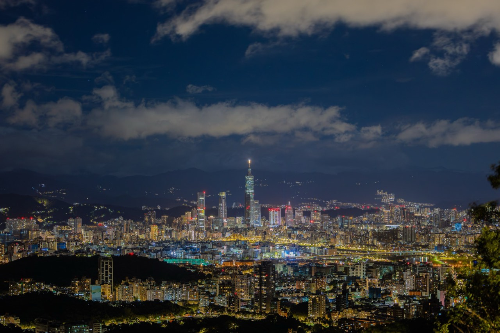
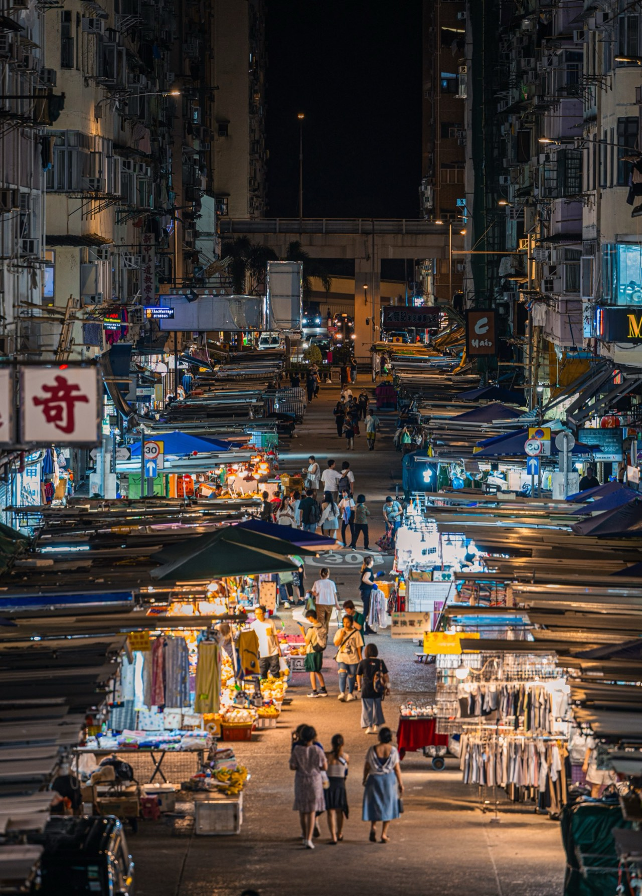

Skip to the content
tuan photography
陳亮元
Menu
Gallery
Destinations
Blog
Skills
About
EN
中文
Gallery
Open any photograph to see how it was made.
Portfolio


By country
Spain
United Kingdom
Germany
Switzerland
Taiwan
Japan
Hong Kong
UAE · Dubai
New Zealand
Not photographed for the site yet
France
South Korea
China
Singapore
Vietnam
Australia
United States